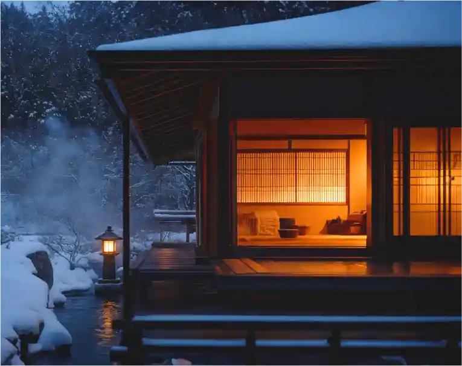
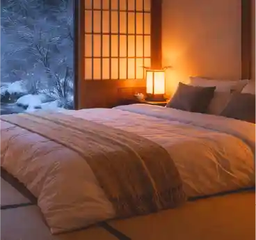
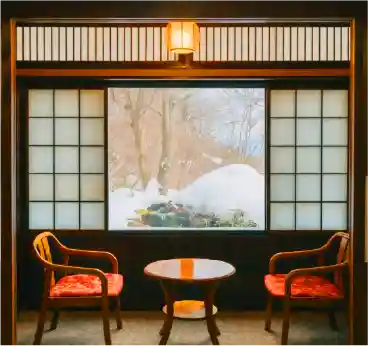
離れ貴賓室 椿
離れならではの静寂に包まれた、特別なひとときをお過ごしいただけます。
専用の露天風呂からは四季折々の自然を眺めながら、心ほどける湯浴みを満喫。
上質な和の趣と落ち着いた空間が、非日常の贅沢を演出します。
大切な方との特別な時間を、心ゆくまでお楽しみください。
Tel.0123-456-7892 チェックイン 15:00 / チェックアウト 10:00

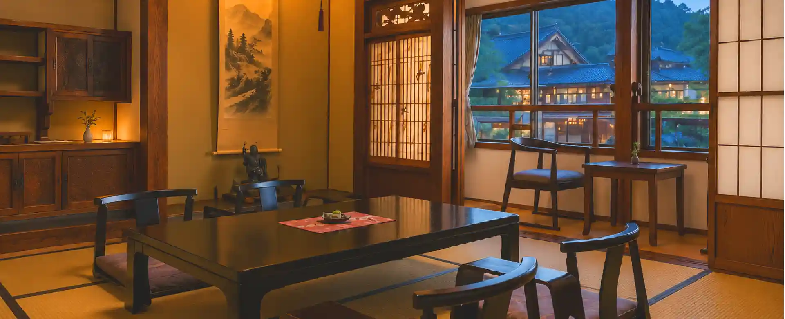

和の趣を大切にした客室は、それぞれ異なる魅力を備えています。
窓の外に広がる自然や静かな空間が、日常を忘れる癒やしの時間を演出します。
旅の目的に合わせて、お好みのお部屋をお選びください。
和の趣を大切にした客室は、それぞれ異なる魅力を備えています。 窓の外に広がる自然や静かな空間が、日常を忘れる癒やしの時間を演出します。 旅の目的に合わせて、お好みのお部屋をお選びください。



離れならではの静寂に包まれた、特別なひとときをお過ごしいただけます。
専用の露天風呂からは四季折々の自然を眺めながら、心ほどける湯浴みを満喫。
上質な和の趣と落ち着いた空間が、非日常の贅沢を演出します。
大切な方との特別な時間を、心ゆくまでお楽しみください。
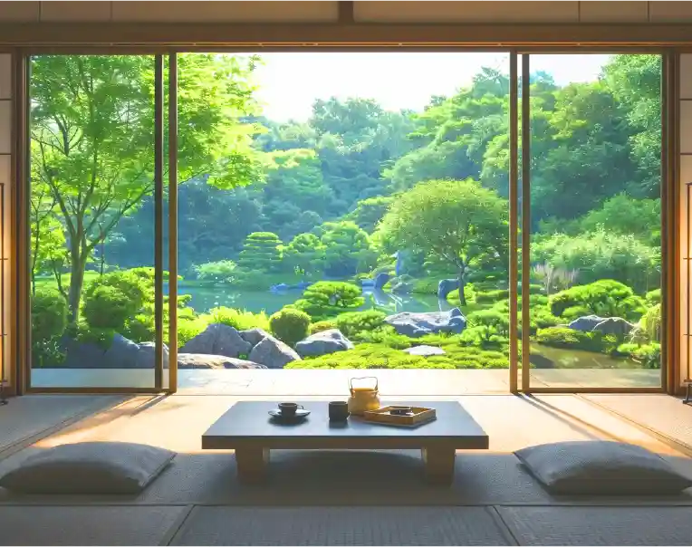
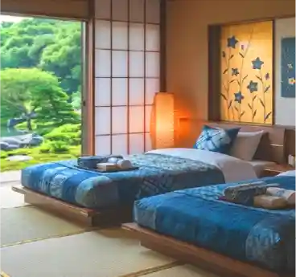
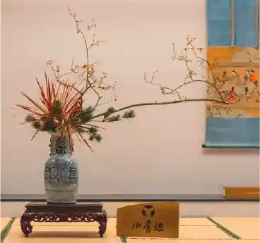
美しい庭園を望む開放的な客室で、四季の彩りをご堪能いただけます。
露天風呂では、自然を感じながらゆったりとした湯浴みをお楽しみいただけます。
和の温もりに包まれた空間が、心安らぐひとときを演出。
日常を忘れ、穏やかな時間をお過ごしください。
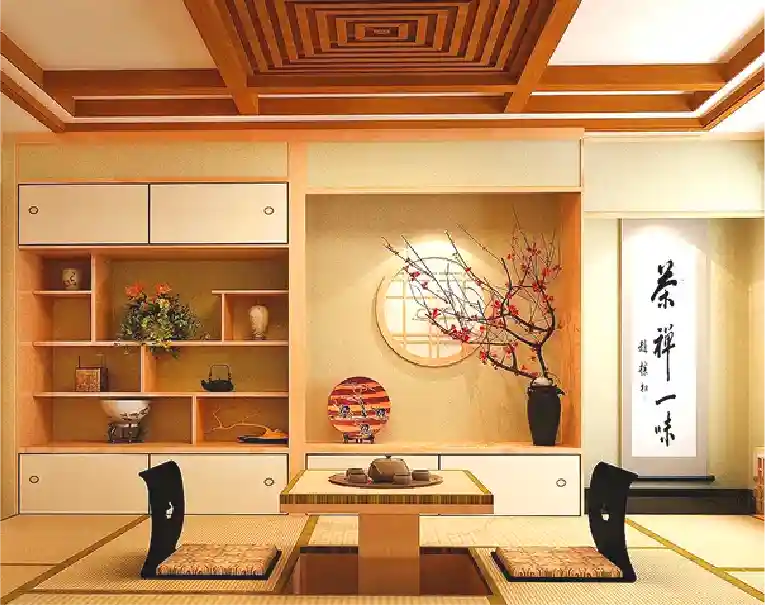
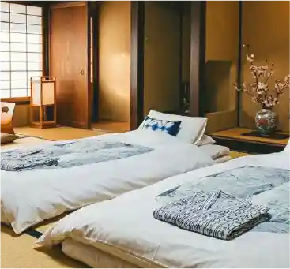
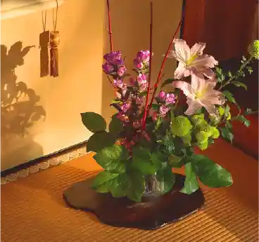
木の温もりを感じる落ち着いた和室で、ゆったりとおくつろぎいただけます。
客室内には内風呂を備え、プライベートな時間を快適にお過ごしいただけます。
畳の香りと和の趣が、旅の疲れを優しく癒します。
心地よい静けさの中で、思い思いのひとときをお楽しみください。